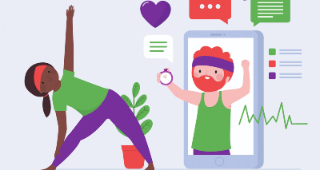
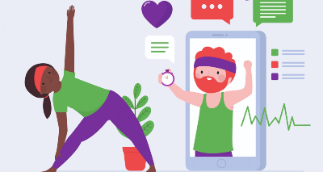

Post-Test
Encuesta sobre funcionalidad de la aplicación, sugerencias para adecuar en la app, y opiniones acerca de su uso a largo plazo.
Encuestas, preguntando hábitos saludables y así ajustar la aplicación.
Desconocimiento sobre hábitos saludables y el poco uso de las nuevas tecnologías como el teléfono móvil para enseñar.
+ Página web para montar la información proporcionada.
+ Juegos sobre la nutrición.
+
Aplicación móvil para dar tips sobre nutrición
y ejercicio.
Primera versión de la aplicación móvil, donde se encuentran algunas secciones de los temas tratados.
Aplicación, población de la investigación, opinión para implementar cambios a futuro sobre la aplicación móvil.
Encuesta de nueve preguntas, sobre generalidades de las aplicaciones de nutrición y ejercicio en la actualidad.
Implementación de la aplicación, contando con una duración de dos semanas, teniendo en cuenta la población investigada.
Encuesta sobre funcionalidad de la aplicación, sugerencias para adecuar en la app, y opiniones acerca de su uso a largo plazo.
El diseño sigue el orden del modelo propuesto por Design Thinking y el método Delphi.
Solucionar una problemática alimenticia con una aplicación móvil, que aconseja dándoles tips para sus buenos hábitos saludables.
Los estudiantes de grado séptimo y octavo del CBSJD, es la población investigada en este proyecto.
Encuestas funcionando como receptor de información, para mejorar la aplicación, analizando su contenido y así tener un producto completo.
Diseño de la aplicación fácil de entender y de usar, con una interfaz ergonómica.
Análisis por medio de la Investigación Cuasi Experimental (Pre-test, Test, Post-test), graficados con diagrama de barras y circular.